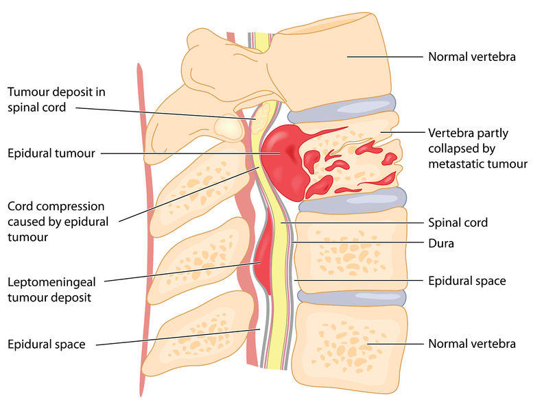

Tumors

SYMPTOMS:
Depending on the location and type of the spinal tumor, other signs and symptoms in addition to pain can develop. This usually happens when the tumor grows and presses on your spinal cord or your nerve roots, blood vessels or bones of your spine.
Other symptoms of spinal tumors include:
- Numbness, tingling or loss of sensation in your legs, arms or chest.
-
Muscle weakness in your legs, arms or chest.
-
Muscle twitches or spasms.
-
Stiff back or neck.
-
Loss of bowel and/or bladder control (bowel incontinence and urinary incontinence).
-
Difficulty walking, which may cause falls.
-
Scoliosis or other spinal deformity resulting from a large and/or destructive tumor.
-
Paralysis that may occur in varying degrees and in different parts of your body, depending on which nerves the tumor is compressing.
CAUSES
Scientists aren’t sure of the cause of most primary spinal tumors. Some of them may be caused by exposure to cancer-causing chemicals or substances. Spinal cord lymphomas (cancers that affect a type of immune cell) are more common in people with weakened immune systems. Spinal tumors can sometimes run in families, so scientists think there’s likely a genetic component.
By definition, secondary (metastatic) spinal tumors are caused by cancer that formed elsewhere in your body and spread (metastasized) to your spine.
DIAGNOSIS
- Imaging tests: Spine X-rays are the go-to imaging test for people with cancer who have sudden back pain. This is because metastatic spinal tumors commonly form in the bony part of your spinal column. Your healthcare provider may also order an MRI and/or CT scan to view your spinal cord, nerves and your surrounding spine (bony and soft tissue). Your healthcare provider may also use imaging tests to look at other parts of your body to determine where the tumor started if it’s a metastatic spinal tumor.
-
Biopsy: Your healthcare provider may order a biopsy, which involves taking a sample of tissue from the tumor to help determine if the tumor is benign or malignant. A pathologist studies the sample to learn if it’s growing or spreading and if so, how quickly. If the tumor is malignant, a biopsy also helps figure out the cancer’s type, which determines treatment options.
-
Bone scan: During a bone scan, your healthcare provider injects a very small amount of a radioactive substance into your vein and then uses imaging to look at your bones. Tracking the movement of the radioactive material helps detect abnormal areas in your spine.
-
Blood tests: Your healthcare provider may order certain blood tests to look for abnormal levels of substances in your blood, such as calcium and alkaline phosphatase. Your body releases these substances into your bloodstream when bone tissue breaks down, which could happen from cancer.
TREATMENTS
The goal of primary spinal tumor treatment is to remove the tumor completely if it’s causing symptoms, when possible.